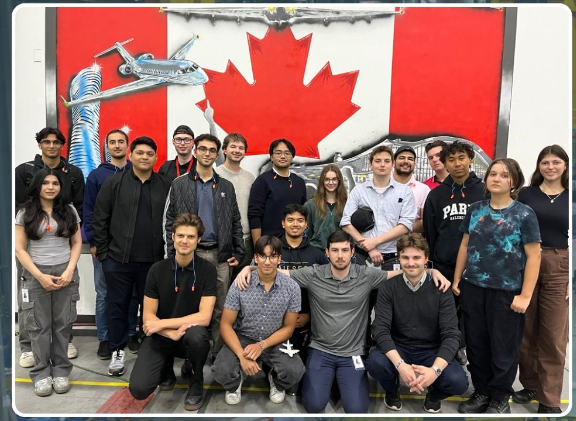

Work term 01 / Mitsubishi Canada Aerospace
Summer 2024
ERP Software Developer
01
Introduction
In this blog post, I will be going over my first co-op term as an ERP Software Developer at Mitsubishi Canada Aerospace.
02
About the employer
For my first co-op work term, I joined Mitsubishi Canada Aerospace, a tier 3 aerospace manufacturing company specializing in assembling the wings and center fuselages of private jets for Bombardier.
At Mitsubishi, I worked within their ERP system, which was responsible for tracking and maintaining the production and scheduling processes that kept the manufacturing operations running smoothly and efficiently.

03
Goals & learning outcomes
Communicating - Oral Communication
Goal: Effective oral communication is essential in any professional setting, especially in a collaborative environment like MHI Canada Aerospace. As an ERP Software Developer, mastering oral communication will allow me to effectively communicate project updates, discuss technical concepts with team members, and present findings to stakeholders.
Reflection: I can confidently say that I've made significant progress in communication. Whether it was updating the team on project progress, discussing technical details, or presenting findings to co-workers, I've learned to articulate my thoughts clearly and effectively. This improvement has not only enhanced my ability to work with colleagues, but also boosted my confidence in professional settings.
Critical & Creative Thinking - Problem Solving
Goal: Problem-solving is a critical skill for a Software Developer, as it involves identifying, analyzing, and resolving complex technical issues efficiently and effectively. Developing strong problem-solving skills will enable me to tackle challenges encountered during software development and testing.
Reflection: My problem-solving skills have grown a lot throughout my co-op experience. I've faced a lots of technical challenges, each requiring a different approach and a detailed analysis. By taking advantage of my ability to identify root causes and develop solutions, I've become better at overcoming obstacles in software development.
Literacy - Technological Literacy
Goal: Enhancing technological literacy will allow me to adapt to new technologies, take advantage of advanced tools, and contribute effectively to technological advancement.
Reflection: Enhancing my technological literacy was a key goal, and I'm pleased with the progress I've made. I've quickly adapted to new tools and technologies, which has enabled me to stay on track and contribute more meaningfully to our projects.
Professional & Ethical Behaviour - Personal Organization/Time Management
Goal: Develop and demonstrate professional and ethical time management and organizational skills during my co-op.
Reflection: By staying organized and prioritizing my tasks, I've been able to consistently meet deadlines without sacrificing quality. Focusing on good time management has made me more efficient and dependable as a team member.
Overall Reflection
When I started, I wanted to learn more about the software development lifecycle and build practical skills in C#, SQL, CSS, and HTML. I feel like I achieved this by working within the company’s tech stack—writing SQL scripts, creating visual components, and coding unit tests with C#. These hands-on tasks gave me a much better understanding of how each piece fits into the bigger picture of software development. I’m at the beginning of my journey, and these skills will definitely help me in future roles, especially when it comes to problem-solving and understanding the flow of a project from start to finish.
I specifically wanted to work with C#, SQL, and web technologies like HTML and CSS because I knew they were foundational to a lot of modern software development. These technologies are widely used and versatile, and I figured that gaining experience with them would set a strong base for future opportunities. Working with them not only helped me strengthen my coding abilities but also gave me more confidence in understanding how back-end and front-end components interact.
Looking back, I’m happy to say that I met most of my goals. I gained practical experience with the technologies I set out to learn, and I feel more comfortable working through the different stages of the development lifecycle. That said, one area I feel I could have improved on is asking more questions. There were times when I hesitated to reach out for help or clarification, and in hindsight, that could have sped up my learning.
04
Job description
In my role as an ERP software developer, I worked extensively with Mitsubishi’s internal ERP system to support and enhance its functionality. My responsibilities included developing and maintaining components within the ERP system using C# and the .NET framework. I was involved in writing unit tests to ensure the reliability and accuracy of the software, and I contributed to creating interactive Blazor components, utilizing C#, HTML, and Bootstrap to improve user experience and streamline workflows within the production and scheduling system.
Although I had learned the fundamentals of programming in school, many of the tasks I faced on the job were new to me, and I had to learn them on the spot. This experience taught me how to adapt quickly and solve real-world problems as they arose. It also showed me the importance of continuous learning in the constantly evolving field of software development.


05
Conclusions
Overall, my time at Mitsubishi Canada Aerospace was an invaluable learning experience. It gave me the opportunity to apply my skills in a real-world setting, working on complex systems that directly impacted production and operations. I gained a deeper understanding of how software plays a crucial role in the aerospace manufacturing process, and it reinforced my passion for using technology to solve real business challenges.
06
Acknowledgments
I would like to express my gratitude to Linda Pretorius for being an outstanding manager and providing support throughout my co-op term. A special thanks to Jimboy Soriano, whose mentorship helped me greatly in improving my software development practices and understanding the nuances of working in a professional environment. Their guidance made my time at Mitsubishi Canada Aerospace both rewarding and educational.
